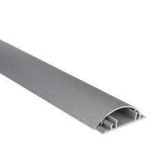
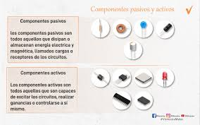

Fibra optica
La fibra óptica es una guía de onda en forma de hilo de material altamente transparente diseñado para transmitir información a grandes distancias utilizando señales ópticas.es un componente electrónico que solo puede recibir energía, que puede disipar, absorber o almacenar en un campo eléctrico o magnético.
Cabaleta
.Las canaletas son conductos o tubos en cuyo interior se guardan los cables eléctricos, cuando estos no quedan empotrados en la pared.

3. ¿Que son los componentes activos en la red?
datos, en particular para las redes de área local (LAN), normalmente montado en una placa de pared o panel de conexionesLos componentes activos son aquellos que son capaces de controlar el flujo de corriente de los circuitos o de realizar ganancias .
